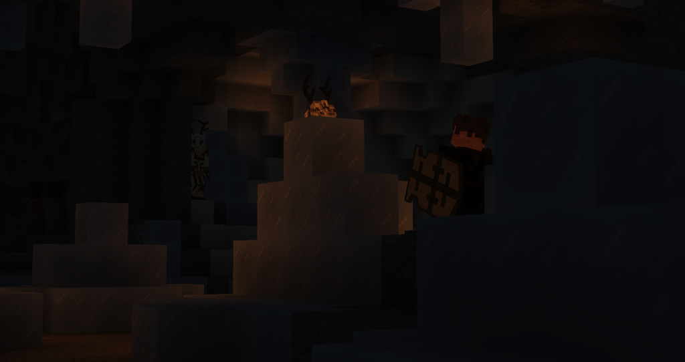
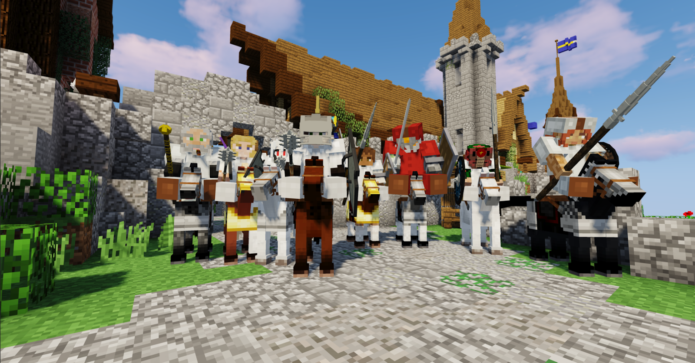

Storytellers (STs) are like game masters, although their role is much more comparable to those of a LARP than a weekly game of DnD. They primarily exist to facilitate plot. While they do run their own events, it can not be stressed enough that if you have a cool idea, be it a plotline, an event, anything really, you are always encouraged to talk to an ST about it. Storytellers like to know what’s going on and if you are going to make something happen, they exist to help you with that!

Most of our plots are player driven. We like to provide a sandbox where the STs fluff out the world and guide players to interesting story beats while leaving the players to make their own decisions about what to get involved in and how much. It is certainly possible to kick off plots yourself and while it isn’t always necessary, it is always recommended to tell STs what’s going on so they can prepare for what you may encounter or even just note it down so it may have future repercussions to make this server into a living, breathing world.
Some things however require an ST, such as making items with custom models, bringing someone back from the brink of death or investigating a crime scene. That said, it need not be so dramatic. Even if nobody's life seems at danger, if you notice something strange, you can contact an ST to ask if there's anything else you'd discover by looking at it closely. Plenty of STs also appreciate receiving your in character prayers or thoughts from time to time, in part because it keeps them in the loop and in part because some STs actually dedicate themselves to the roleplay surrounding certain religions and the such.
It is generally recommended to contact a specific ST rather than to mention the entire team on Discord if you need one, and it can be polite to ask what ST a plotline belongs to. That said, even if you just hit up an ST at random, they should be able to redirect you if needed, so don’t worry too much. It is better if you bother the STs too often than if you bother them too little. So if you’re feeling anxious, remember, they volunteered for this position, they want to get what you’re throwing at them and they wish you threw more.
Characters can progress in a multitude of ways, of course, the most important is their personal development, as this is primarily a roleplay server. That said, there are other ways a character can change. You can pick up new skills, gain unique items, learn special roleplay abilities, get new insights, obtain important information and more. You should reach out to an ST if you intend to acquire such a thing or really anything you don’t know how to get. STs should have access to all the secrets and know the tools or the people that can take care of more mechanical changes.
In a way, such rewards exist to encourage you to be active, run your own events, start plotlines, but also as capstones to personal arcs. Rewards are ways to show off your development, both positive and negative, as some characters acquire new abilities at great personal cost. All in good fun, of course.
Scrump guided Jaeros through his Tacnu Zoku using her knowledge as a boneshaper, took Jaeros on as an apprentice and consistently involved him in her activities, organized a heist for rare materials from a dungeon with several other players, and led rituals to introduce other players to her magical studies. Through creating an extensive amount of roleplay for other players, she was able to use the knowledge and materials she gathered to create a magical staff that allowed her to levitate enemies at will.
